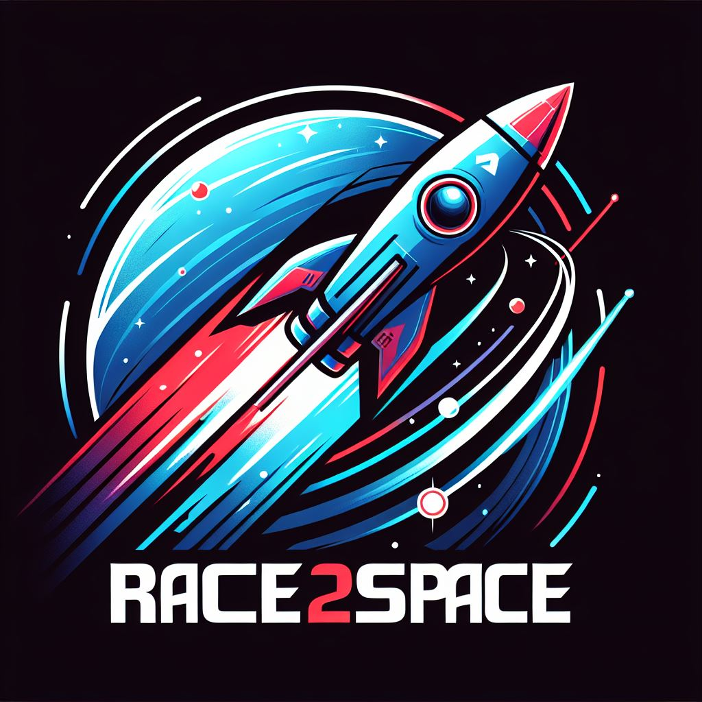
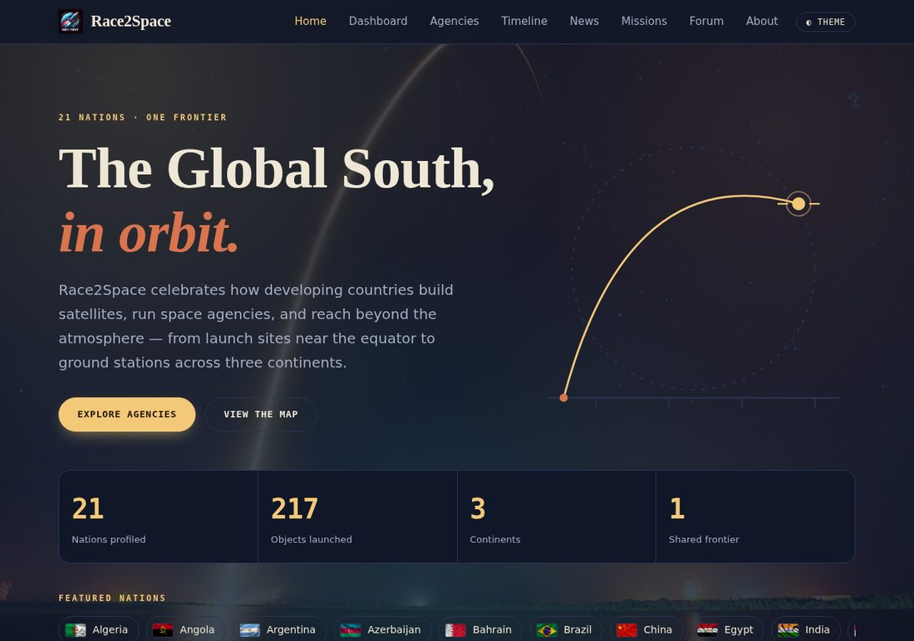
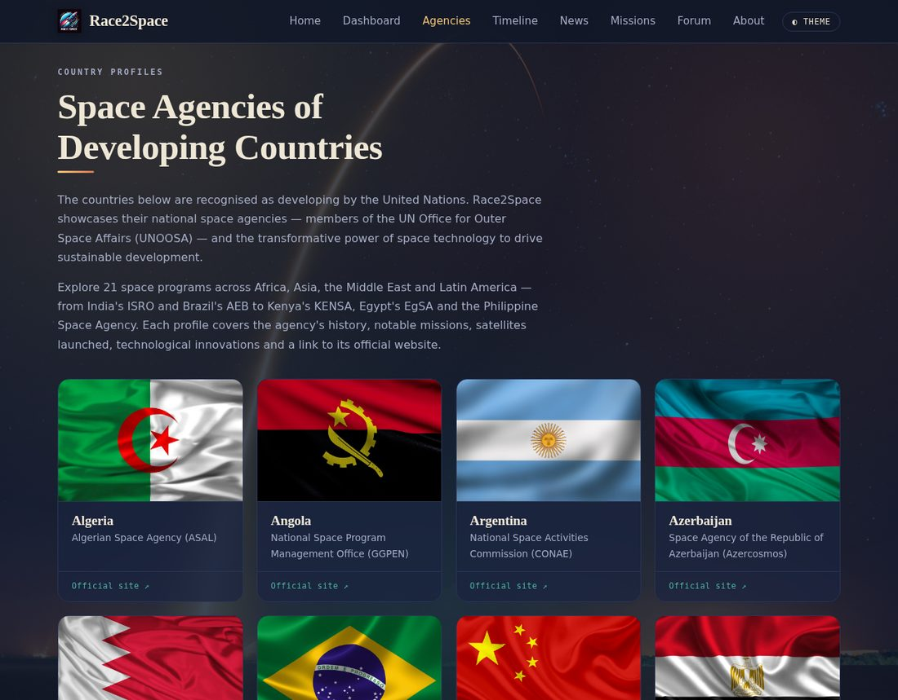
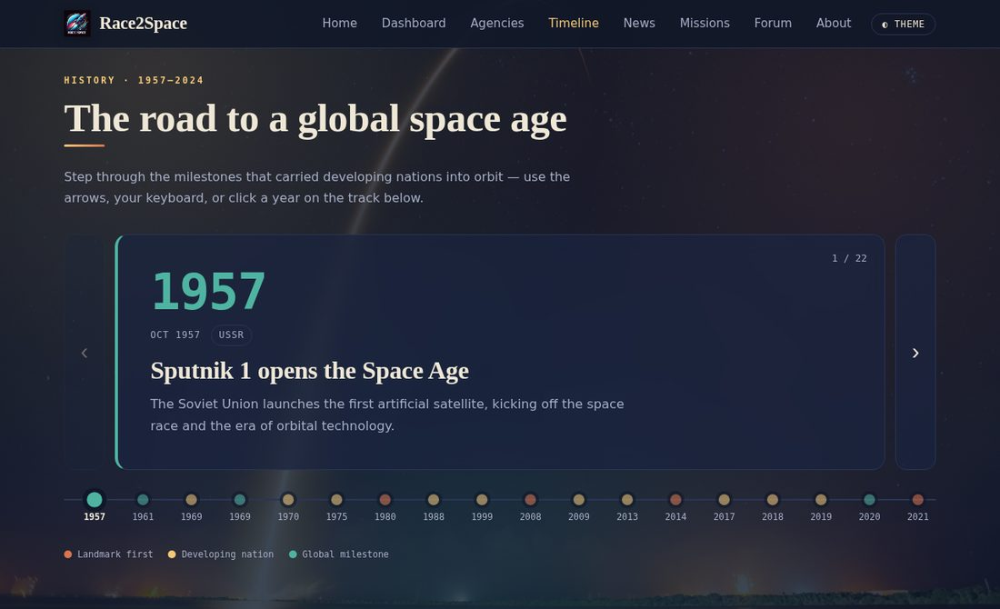
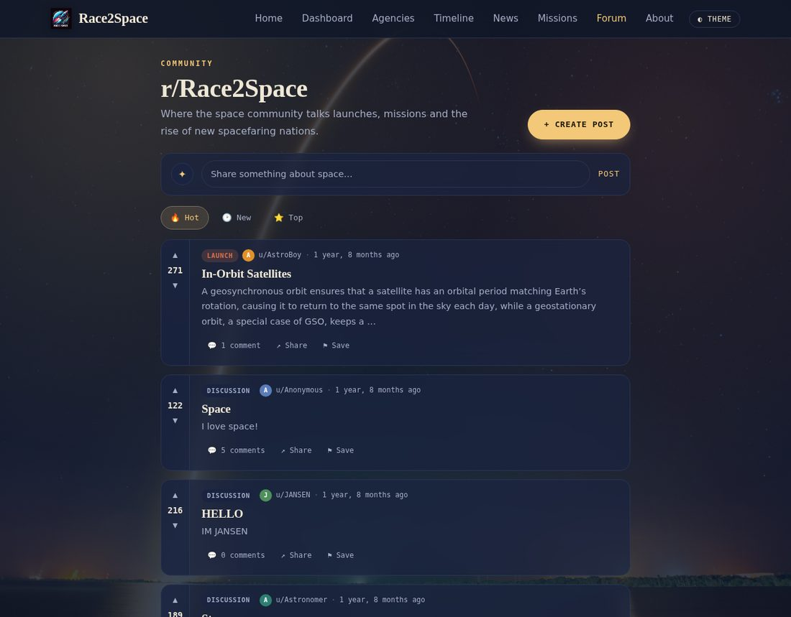
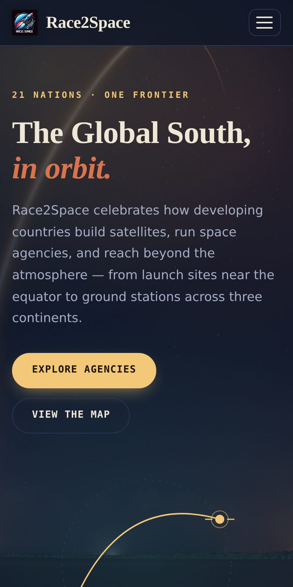

Backend
Python
Django
SQLite

Tracking the rise of developing nations in space.

Race2Space is a full-stack web platform that documents and celebrates the space programs of developing nations — the agencies, missions and milestones of countries too often left out of the story of space exploration. It combines live data, interactive visualizations and original content into a single, cohesive product.
Real-time tracking of the ISS, Tiangong and Hubble on a dark control-room map, a live launch schedule with countdowns, and a running "humans in space" count.
Government space-budget comparisons across 34 agencies, with region filtering — built with Chart.js.
Space agencies and live satellites plotted with Leaflet.
A hand-built journey through the milestones that carried developing nations into orbit.
A self-updating space-news feed and a Reddit-style community discussion board.
A fully custom, responsive UI with light/dark themes — no off-the-shelf template. SEO'd (sitemap, structured data, Open Graph) with secure production settings.
Python
Django
SQLite
Vanilla JavaScript
HTML / CSS
Chart.js · Leaflet
Spaceflight News API
Launch Library 2
WhereTheISS.at
PythonAnywhere
Git-based CD



